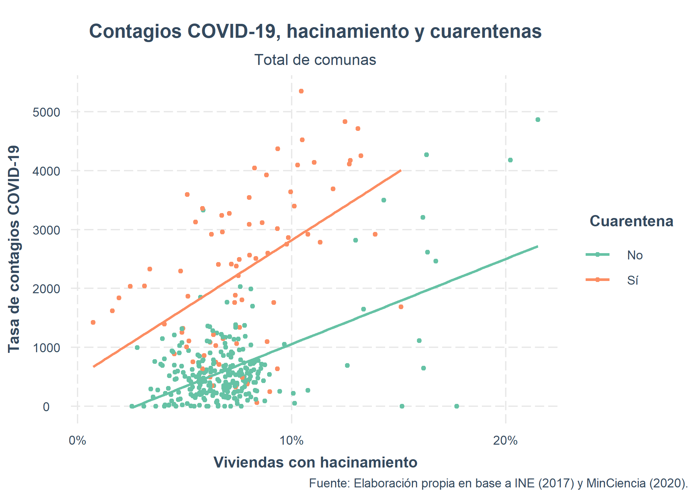

Contexto
Al 4 de agosto, Chile acumula 361.493 personas contagiadas por COVID-19, según la información oficial del Ministerio de Salud (MINSAL, 2020). El desarrollo y manejo de esta pandemia ha evidenciado la fuerte desigualdad territorial que existe en el país. El primer punto de inflexión corresponde al 18 de mayo, cuando en distintos sectores de Santiago la población se manifestó, acusando que la falta de medidas económicas por parte del gobierno los tenía con hambre. Como respuesta ante esta situación, el 28 de mayo, el ex ministro de Salud Jaime Mañalich, reconoció en un matinal que no estaba al tanto de los niveles de pobreza y hacinamiento que tiene Santiago. Esta declaración se realiza después de más de dos meses desde que se implementaron las primeras cuarentenas comunales en el sector oriente de la Región Metropolitana: Lo Barnechea, Vitacura, Las Condes, Providencia, Santiago, Ñuñoa e Independencia. Hecho al que también se le suma el cuestionamiento constante sobre la eficiencia epidemiológica de las cuarentenas dinámicas implementadas hasta el momento.
Hoy, a poco más de dos meses de ese suceso, existe un segundo punto de inflexión pues se vuelve a poner en duda al Ministerio de Salud, pero esta vez en relación al cumplimiento de los criterios propuestos por la OMS para el plan de desconfinamiento llamado “Paso a Paso” (Federación Nacional de Asociaciones de Enfermeras y Enfermeros de Chile, 2020). El gobierno anunció que desde el 28 de julio, siete comunas de la Región Metropolitana (RM) pasarán a una etapa de “transición”. Las dudas se plantean desde distintos sectores y uno de los factores preponderantes para esto es que, según la subsecretaria Paula Daza, la trazabilidad es del 80%, pero según una investigación de CIPER (Miranda & Albert, 2020), nunca se ha especificado cómo se calcula esa cifra de trazabilidad. Las decisiones sobre confinamientos y desconfinamientos involucran decisiones que requieren un conocimiento acabado sobre niveles de pobreza y hacinamiento a nivel territorial. En este informe pretendemos aportar desde el conocimiento acumulado sobre el déficit y el aumento de la precariedad habitacional, con un foco en el hacinamiento. El hacinamiento refiere a la relación entre el número de personas residentes en una vivienda y el número de dormitorios que posee la misma. En base a la metodología establecida por el Ministerio de Desarrollo Social, comienza a considerarse hacinamiento cuando en una vivienda residen, en promedio, 2,5 o más personas por habitación (Ministerio de Desarrollo Social, 2020).
A pesar de concentrarse en las regiones del Norte Grande y la Región Metropolitana, el hacinamiento corresponde a una problemática social y habitacional que se ve manifiesta a lo largo de la totalidad de nuestro territorio nacional. Según datos del Censo 2017, un 7% de las viviendas particulares ocupadas del país presenta hacinamiento; proporción que se eleva en Tarapacá, la región con mayor hacinamiento (13%), y la Región Metropolitana (8%) (INE, 2017). Sin embargo, las declaraciones del exministro pusieron en evidencia que estos factores no han sido considerados en la planificación de una estrategia sanitaria.
Figura 1. Porcentaje de viviendas con hacinamiento medio o crítico por región. Se evidencia que en siete regiones del país la proporción de viviendas con hacinamiento medio o crítico supera el 7% y que esta problemática tiende a concentrarse en las regiones de la zona norte del país. Justamente, Tarapacá es aquella con mayores deficiencias en la materia, en tanto cerca de una de cada siete de sus viviendas presenta algún grado de hacinamiento.
Este noveno informe de MOVID-19 a la Mesa Social COVID-19 de la Universidad de Chile y del Colegio Médico de Chile, en conjunto con otras instituciones académicas del país, cuenta con el apoyo del Observatorio de Ciudades UC e incluye un (visor espacial de los datos MOVID-19), con cartografías temáticas sobre COVID-19 y hacinamiento. Este informe tiene como objetivo dar cuenta de la relevancia territorial para entender la relación entre el hacinamiento de los hogares y el desarrollo de síntomas compatibles con COVID-19, generando focos de persistencia en las comunas que entraron en fase dos de desconfinamiento. Se trabajará en las escalas de distrito, comuna y región. Este informe utiliza información de 304.833 observaciones, pertenecientes a 52.108 personas que contestaron la Encuesta MOVID-19 a lo largo de 13 semanas de estudio, entre abril y julio del presente año. Además, la distribución territorial alcanza 927 distritos y 324 comunas, pertenecientes a todas las regiones del país.
Análisis comunal de movid-19 en el contexto nacional de contagios y cuarentenas
Durante las primeras semanas de la llegada del virus a Chile, los contagios fueron marcados por un aumento progresivo en las regiones de Ñuble, La Araucanía, Los Lagos y Magallanes. Para el 31 de marzo, según las cifras entregadas por el Ministerio de Ciencia en base al Reporte Diario de Coronavirus del Ministerio de Salud (Gobierno de Chile, 2020), las regiones mencionadas tenían las tasas más altas de contagios, que rondaban entre los 35 y 45 casos cada 100.000 habitantes. A pesar de esto, no se decretó cuarentena hasta prácticamente un mes después del inicio de COVID-19 en Temuco, Padre las Casas, Chillán, Chillán Viejo, Osorno y Punta Arenas.
En relación al indicador de hacinamiento en las ciudades más afectadas de esas regiones, Chillán - Chillán Viejo, Temuco - Padre Las Casas, Osorno y Punta Arenas, este no presenta buenas cifras. En las cuatro imágenes presentadas a continuación, se muestra con mayor detalle el porcentaje de viviendas con hacinamiento medio y crítico a nivel de distrito censal, para cada ciudad. En todas ellas, a excepción de Punta Arenas, existen zonas críticas, donde los hogares con hacinamiento medio y crítico superan el 35% del total de las viviendas. Para información específica sobre esto, revisar el (visor espacial MOVID-19) donde se muestra la información sobre hacinamiento a nivel nacional por distrito censal.

Figura 2. Hacinamiento medio o crítico en las primeras comunas más afectadas por la pandemia: (i) Chillán y Chillán Viejo; (ii) Temuco y Padre Las Casas; (iii) Osorno; y (iv) Punta Arenas.
Relacionando los inicios de cuarentenas y el índice de hacinamiento, se sostiene como argumento principal de este informe que no se consideraron variables territoriales como factores relevantes para la toma de decisión sobre medidas de cuarentena. Esto porque, a mayor hacinamiento y movilidad, mayor facilidad de contagio al interior de las viviendas. Como se observa en la Figura 3, del total de comunas del país, aquellas con mayor tasa de contagio también presentan mayores niveles de hacinamiento . Por otro lado, hay comunas que nunca han sido declaradas en cuarentena y que tienen alta tasa de contagios y un indicador de hacinamiento de medio a crítico, principalmente en el norte del país. Estas comunas son: Colchane, Putre, Camarones, Huara, Camiña, Ollagüe, Sierra Gorda, María Elena y San Pedro de Atacama, marcando al Norte Grande como la zona con peores indicadores entre las variables tasa de contagio y hacinamiento.

Figura 3. Gráfico de dispersión de comunas del país, según (i) tasa de contagios comunal COVID-19 cada 1000 habitantes y (ii) porcentaje comunal de viviendas con hacinamiento. Se distingue entre comunas que han estado bajo cuarentena (color naranjo) y aquellas que no (color verde).
Con respecto a la información comunal de MOVID-19, esta se trabajó en dos periodos. El primero, comprende desde la semana que comienza el monitoreo (8 abril) hasta el domingo 17 de mayo, previo al comienzo de la cuarentena en la Región Metropolitana y previo al aumento significativo de casos COVID-19 positivo por día. El segundo periodo, va desde la semana 18 de mayo hasta el 16 de junio. En el (visor espacial MOVID-19), se muestra la distribución de casos sospechosos (según definición de MOVID-19, 2020) y diagnosticados COVID-19 para ambos periodos. Sobre aquellas personas sospechosas, se muestra una tendencia a mantener un elevado nivel en ambos períodos en las grandes zonas urbanas, como el Gran Santiago, Gran Valparaíso, Antofagasta, La Serena - Coquimbo, Rancagua, Talca, Concepción, Temuco y Puerto Montt. Sin embargo, en la variable de casos confirmados, la tendencia no es igual que en sospechosos. Si bien, hay zonas urbanas como Iquique, Chillán, Talca y Temuco, los números son altos en ambos períodos, las grandes áreas urbanas no son homogéneas. En la Región Metropolitana, por ejemplo, los números bajan para el segundo período, posterior a la implementación de cuarentena total en las comunas del centro - norte como Independencia, Recoleta, Conchalí, Quinta Normal, Renca entre otras. Lo mismo ocurre en la zona sur de la región y en el Gran Valparaíso. Solo Viña del Mar se mantiene alta en ambos periodos.
Análisis distrital de movid-19 en el contexto nacional de contagios y de evolución espacio-temporal
A diferencia del análisis comunal, el análisis distrital (ver INE, 2018) se concentra principalmente en la Región Metropolitana, debido a la concentración de datos desagregados con esta información en MOVID-19. Las variables utilizadas en esta sección son las siguientes: sospechosos, diagnosticados, sintomáticos, diagnosticados - asintomáticos, diagnosticados - sintomáticos, sospechosos - confirmados y sospechosos sin confirmar. Este análisis se realiza en dos partes, una centrada en la evolución del COVID-19 en relación a las cuarentenas y, la otra, en un análisis espacio temporal de la concentración de los casos. Debido a la magnitud de esta encuesta, tambien hemos proporcionado un visor online de la información espacializada, para comprender de mejor manera la evolución espacio temporal del virus.
Evolución espacial MOVID-19 y cuarentenas
De acuerdo a la base MOVID-19, y a su variable de distrito por observación, se hizo un análisis territorial de las dinámicas evolutivas de algunos indicadores. Además de esto, se sumó al análisis la permanencia de barreras comunales de cuarentenas aplicadas desde marzo del 2020 hasta el 16 de junio del 2020. Cada distrito y variable se muestra en el (visor espacial MOVID-19).
Desde la semana inicial de este análisis, tanto los sospechosos, diagnosticados y sintomáticos se comienzan a manifestar en el sector oriente de la capital. Esta tendencia varía a lo largo del país, pero en definitiva los casos se consolidan en zonas de mayor densidad poblacional. Con respecto a la cobertura de las cuarentenas decretadas, durante la primera semana de análisis, el 60% de los sospechosos COVID-19 habitan en comunas o sectores con cuarentena.
A partir de la semana previa a la declaración de la cuarentena general en la Región Metropolitana, la cobertura de sospechosos COVID-19 se mantiene arriba del 80% hasta la última semana, demostrando la efectividad de la extensión de la cuarentena a nivel metropolitano en la RM. Sobre los diagnosticados COVID-19, en un comienzo estos se encuentran cubiertos en un 40% por cuarentenas, reduciéndose a un 10% durante las cuarentenas dinámicas.
En relación con los casos sintomáticos, éstos se contienen en un 40% durante la primera semana de análisis, presentando altos y bajos hasta la semana 22 (cuarentena total decretada para la RM), donde los casos sintomáticos alcanzan una cobertura mayor al 80%.
En relación con las variables cruzadas de diagnosticados y sospechosos, las tendencias anteriores se consolidan, confirmando que, durante las cuarentenas parciales, la cobertura y aislamiento de los casos disminuyó inclusive hasta un 10%. Al contrario, se demuestra que a partir de la semana 20-22, cuando se extienden los territorios en cuarentena en la RM, la cobertura supera el 80%, consolidando la tendencia de efectividad de las cuarentenas para cubrir la mayoría de los casos de sospecha, diagnóstico y síntomas COVID-19.
Figura 4. Gráfico de porcentaje de diagnosticados y sospechosos COVID-19 que se encuentran en territorios con cuarentena, respecto al total de diagnosticados y sospechosos COVID-19, por semana del año. Meses comprendidos, según semana del año: abril (16-18), mayo (18-22), junio (23-27) y julio (27).
Dinámicas espacio – temporales
Se analizaron las dinámicas tanto espaciales como temporales de los indicadores MOVID-19, utilizando una herramienta de estadística espacial que busca analizar y determinar donde hay patrones espacio – temporales ligados al COVID-19. De esta manera, se realizó un análisis llamado “puntos calientes emergentes” a nivel nacional, con el fin de localizar focos de sospechosos, diagnosticados y sintomáticos que prevalecen tanto en el tiempo como en el espacio, con variados patrones de movimiento.
Según las observaciones MOVID-19, los puntos de mayor contagio, diagnóstico y sospecha están en la Región Metropolitana. Los sospechosos se concentran en las comunas centrales del Gran Santiago, pero los diagnosticados se mueven hacia el sector oriente, incluyendo la comuna de Las Condes, La Reina y Vitacura, coincidente con las primeas comunas en ingresar a la fase dos de desconfinamiento. Por otro lado, los sospechosos se concentran en la zona centro-oriente de Santiago, en particular en las comunas de Macul, Ñuñoa, Providencia, Recoleta y Huechuraba.
Sobre las variables cruzadas, las concentraciones más críticas también estás en la Región Metropolitana. En las observaciones correspondientes a “diagnosticados sin síntomas”, estos se concentran en las comunas del cono de Santiago, Ñuñoa, Peñalolén y La Reina. Los diagnosticados sintomáticos, se centran en Santiago centro, Providencia, Recoleta y parte de la zona centro - poniente de la capital. Sobre los sospechosos diagnosticados, tiene dos focos: Conchalí - Recoleta y Providencia - Ñuñoa - Macul. Por último, sospechosos no diagnosticados son la variable más expandida en la Región Metropolitana, abarca las comunas de Renca, Conchalí, Quinta Normal, Recoleta, Independencia, Lo Prado, Estación Central, Santiago, Cerrillos, San Miguel, Macul, San Joaquín, Ñuñoa, Providencia, Vitacura y otras áreas aledañas a estas comunas.
Asimismo, el análisis espacio temporal de las observaciones, nos entregan patrones del movimiento del virus. Así, al calcularse en el espacio y tiempo nos entrega información clave para detectar tendencias que ayuden a actuar de mejor manera con políticas públicas. Según indica la Figura 5, este análisis de patrones espacio temporales nos dice, por ejemplo, que las comunas de Las Condes, La Reina y Peñalolén presentan un “punto caliente persistente” de casos diagnosticados asintomáticos, información que puede resultar clave para prevenir y realizar campañas comunicacionales de autocuidado y uso obligatorio de mascarillas en estas comunas. Así mismo, la variable de sospechosos no diagnosticados posee un punto caliente persistente en las comunas de Ñuñoa y Macul.
Para visualizar más información relevante sobre la persistencia de cada variable analizada contagio, diagnóstico y sospecha, además del cruce entre ellas, en el territorio, revisar el (visor de cartografías de MOVID-19).
Figura 5. Mapa de análisis de patrones espacio-temporales con variable cruzada de diagnosticados asintomáticos. Fuente: Observatorio de Ciudades PUC. (2020)
Análisis explicativo de hacinamiento y covid-19
Como se ha visto en las anteriores secciones, los factores espaciales poseen un rol trascendental en la manifestación del COVID-19 al interior de nuestro país. Sin embargo, a pesar de que han sido variadas las investigaciones que han intentado realzar la importancia de este tipo de determinantes, hasta el presente es escasa la evidencia que intenta cuantificar y diferenciar entre sí la influencia que ejercen las características de los individuos y de sus territorios en la propagación de la pandemia. La presente sección, justamente, intentará dar cuenta de cómo ciertos factores individuales y comunales repercuten en la probabilidad de manifestar alguna condición asociada al virus.
Mediante modelos de regresión logística multinivel, expresados en la Figura 6, se analizaron los factores que hacen más probable que una persona sea (i) sintomático, (ii) sospechoso o (iii) diagnosticado de Coronavirus. Este tipo de modelos es especialmente adecuado para una labor como ésta, donde la exposición de las personas al virus en ningún caso resulta aleatoria, sino que se encuentra agrupada naturalmente en unidades a distinto nivel. En este caso, la información se encuentra anidada en individuos y comunas.
Existen variados hallazgos relevantes de mencionar. Lo primero es que la probabilidad de constituirse como un caso sospechoso o ser diagnosticado con COVID-19 está explicada en un 9,6% y 9,5%, respectivamente, sólo por la comuna en la que se reside. Para el hecho de expresar algún tipo de síntoma asociado al COVID-19, la proporción explicada por factores comunales (correlación intra-clase) disminuye a un 2,1% . De esta forma, independiente de las características que tengan las personas, una importante fracción de la probabilidad de constituirse como un caso sospechoso o diagnosticado por Coronavirus, está explicada sólo por factores ambientales asociados exclusivamente al hecho de residir en una comuna u otra.
Figura 6. . Modelos logísticos multinivel que predicen (i) el expresar algún tipo de síntoma, (ii) constituirse como un caso sospechoso, y (iii) ser diagnosticado por Coronavirus (n individuos = 36.076, n comunas = 313). Odds ratios estandarizados. Se consideran variables predictoras a nivel individual (sexo, edad, educación y situación laboral) y a nivel comunal (hacinamiento comunal alto cuando el porcentaje de viviendas con hacinamiento en la comuna es superior a la mediana de la muestra y el que la comuna se haya declarado en algún momento bajo cuarentena). Los resultados muestran que: (a) La chance de expresar algún tipo de síntoma asociado al COVID-19 es mayor entre mujeres que entre hombres, disminuye por cada año de edad, no presenta diferencias entre quienes son profesionales y quienes no, es mayor entre trabajadores que entre quienes no trabajan, aumenta si la persona reside en una comuna con alto nivel de hacinamiento y se incrementa si la persona reside en una comuna que ha tenido cuarentena. (b) La chance de constituirse como un caso sospechoso de COVID-19 es mayor entre mujeres que entre hombres, disminuye por cada año de edad, es menor entre profesionales que entre no profesionales, es mayor entre trabajadores que entre quienes no trabajan, aumenta si la persona reside en una comuna con alto nivel de hacinamiento y se incrementa si la persona reside en una comuna que ha tenido cuarentena. (c) La chance de ser diagnosticado con COVID-19 no presenta diferencias entre hombres y mujeres, disminuye por cada año de edad, es menor entre profesionales que entre no profesionales, es mayor entre trabajadores que entre quienes no trabajan, aumenta si la persona reside en una comuna con alto nivel de hacinamiento y se incrementa si la persona reside en una comuna que ha tenido cuarentena.
La Figura 6 da cuenta de los factores que hacen más o menos probable que una persona sea sintomático, sospechoso o diagnosticado por Coronavirus. Los resultados de los tres modelos estimados evidencian que el hacinamiento de las comunas es siempre un factor de riesgo. Aún controlando por factores individuales y la presencia de cuarentenas, el residir en una comuna con hacinamiento alto (mayor a la mediana de comunas de la muestra) incrementa las probabilidades de que las personas desarrollen síntomas, se constituyan como casos sospechosos o sean diagnosticados por COVID-19. La robustez de este resultado se hace más evidente, al tomar en consideración que los modelos incluyen el efecto que podrían ejercer las cuarentenas comunales. Asimismo, las chances de situarse en cualquiera de los tres escenarios tienden a aumentar entre trabajadores remunerados y personas con nivel educacional no profesional, revelando la diferenciada exposición que tienen los individuos ante la pandemia, según situación laboral y nivel socioeconómico.